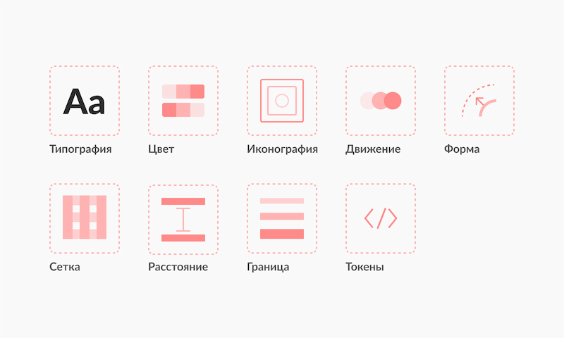
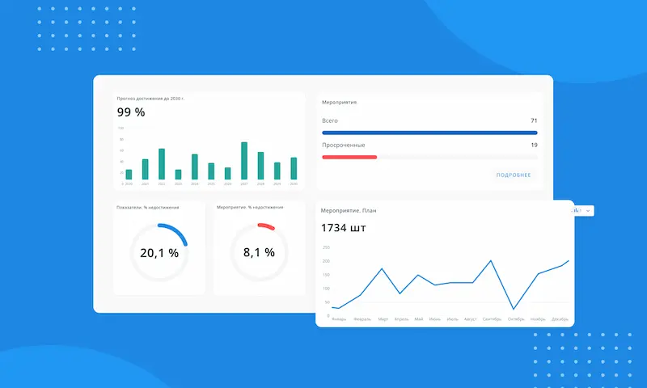
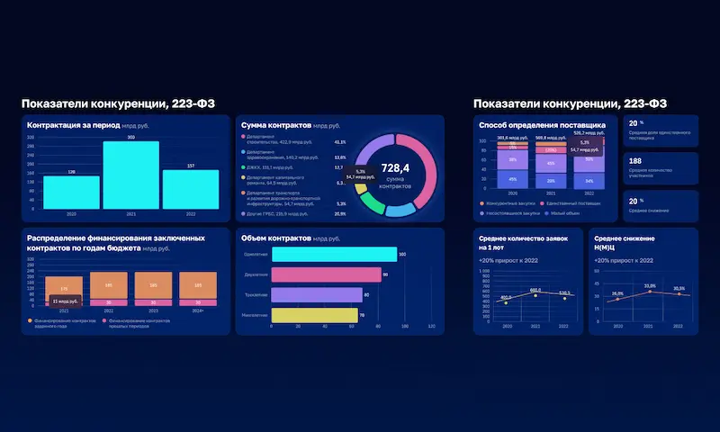

Senior UX/UI Designer для сложных аналитических систем
9+ лет в финтехе и enterprise-среде: аналитические интерфейсы, дашборды, дизайн-системы, внутренние продукты. Фокус — ясность данных, масштабируемость и предсказуемый UX.
Сильные стороны
- Проектирование интерфейсов для анализа данных и принятия решений
- Архитектура интерфейсов, сценариев и пользовательских потоков
- Создание и развитие дизайн-систем
- Взаимодействие с аналитиками и продуктовой командой
Ключевые кейсы
4 проекта, которые лучше всего отражают мой уровень и фокус.

Дизайн-система Московской Биржи
Проектирование и развитие дизайн-системы для внутренних и публичных продуктов Московской Биржи.
Платёжная система Банка России
Внутренняя веб-платформа Центрального банка РФ для ежедневной операционной работы, контроля и мониторинга платёжных процессов.

Аналитическая система
Проектирование и развитие веб-сервиса для анализа достижения национальных целей, мониторинга мероприятий, рисков и инцидентов.

Аналитические дашборды
Проектирование и развитие аналитических интерфейсов для руководителей и их заместителей.
Обо мне
UX/UI дизайнер с более чем 9-летним опытом в проектировании финансовых и аналитических веб-систем.
Разрабатываю интерфейсы для B2B-продуктов, дашбордов и внутренних платформ с высокой плотностью данных.
Создаю прототипы, дизайн-системы и сопровождаю внедрение решений в разработке.
Работал в крупных организациях (Московская биржа, Банк России, Аналитический центр), в кросс функциональных командах.
Контакты
Готов обсудить роль, задачи и формат работы.